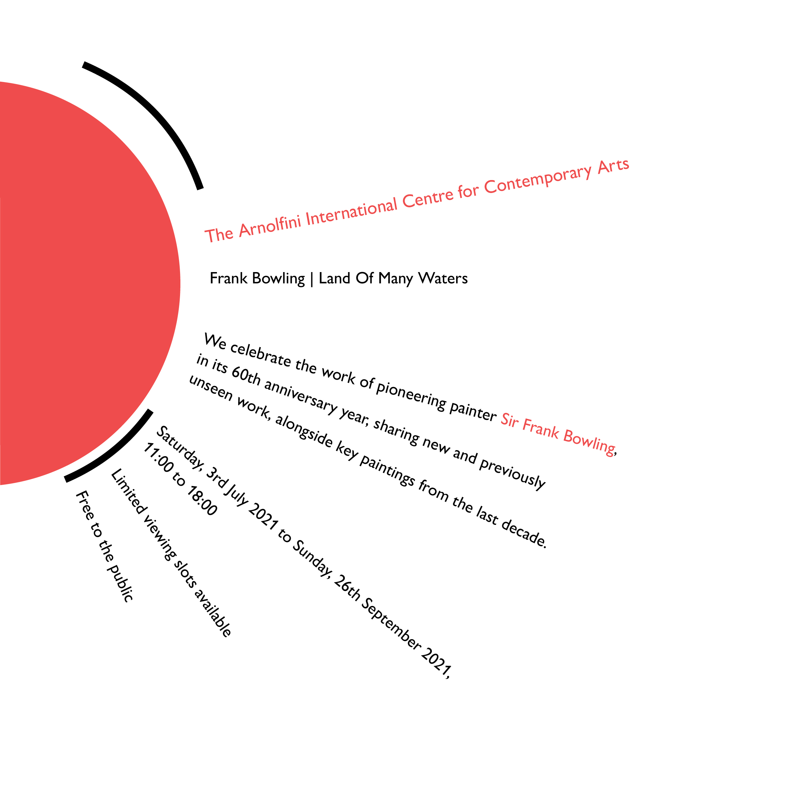
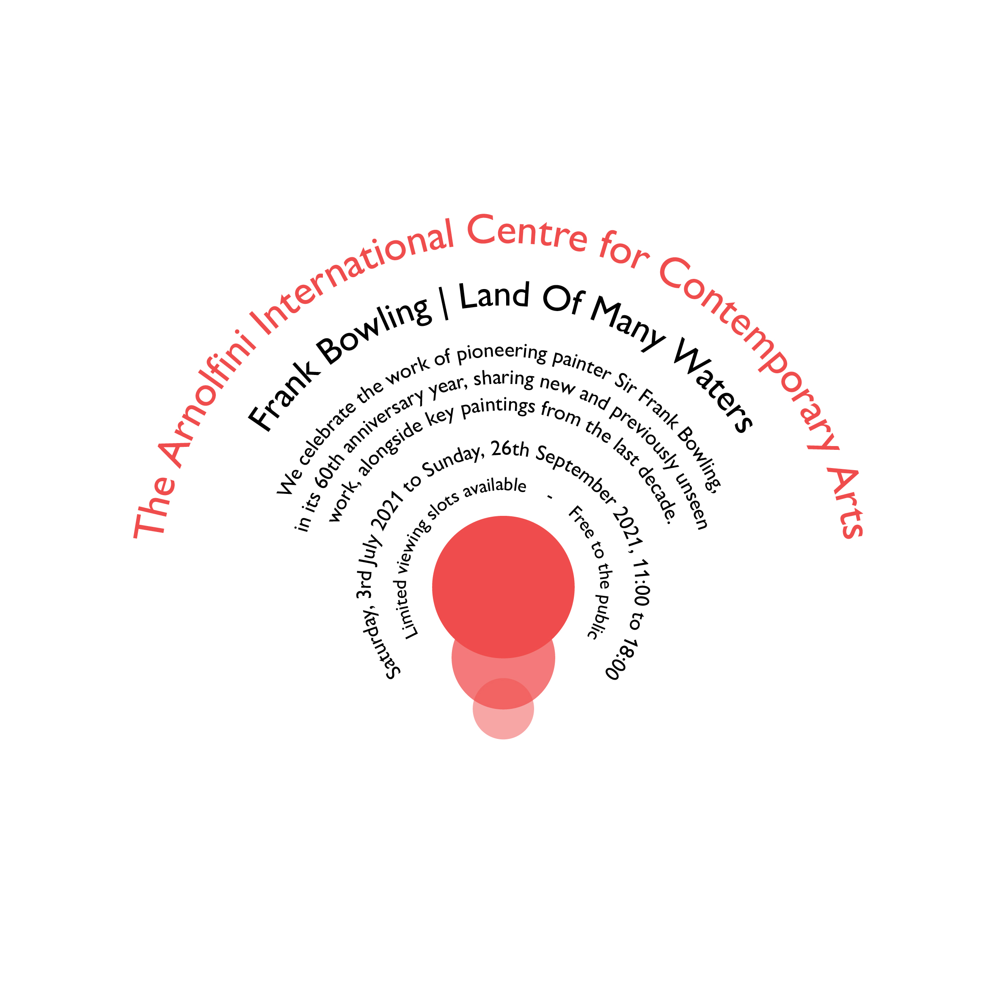
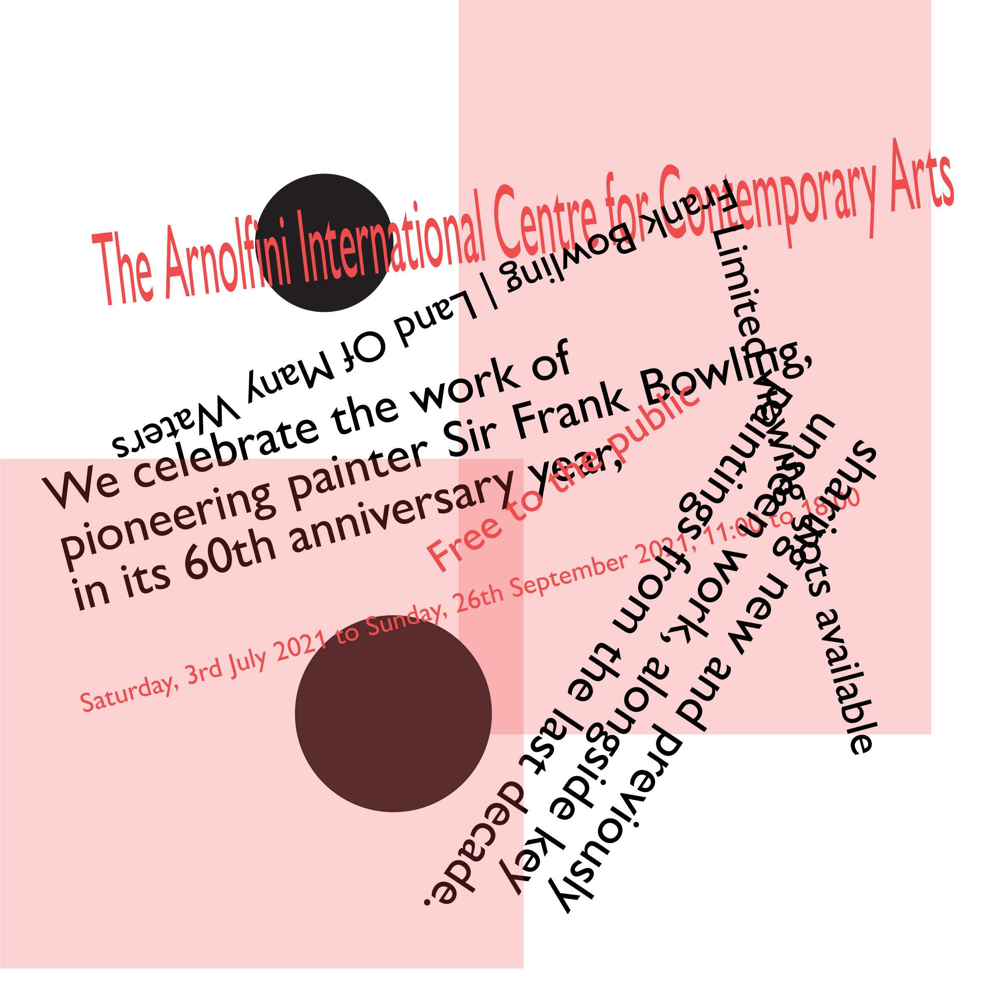
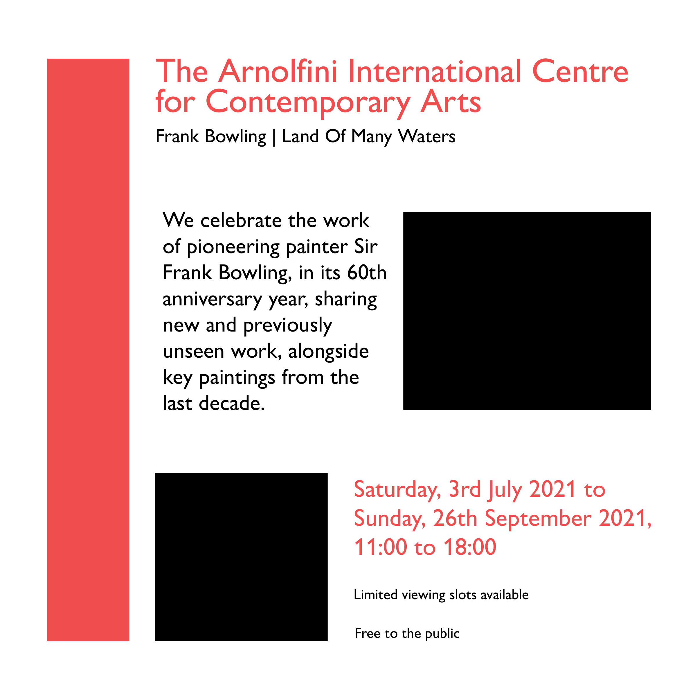
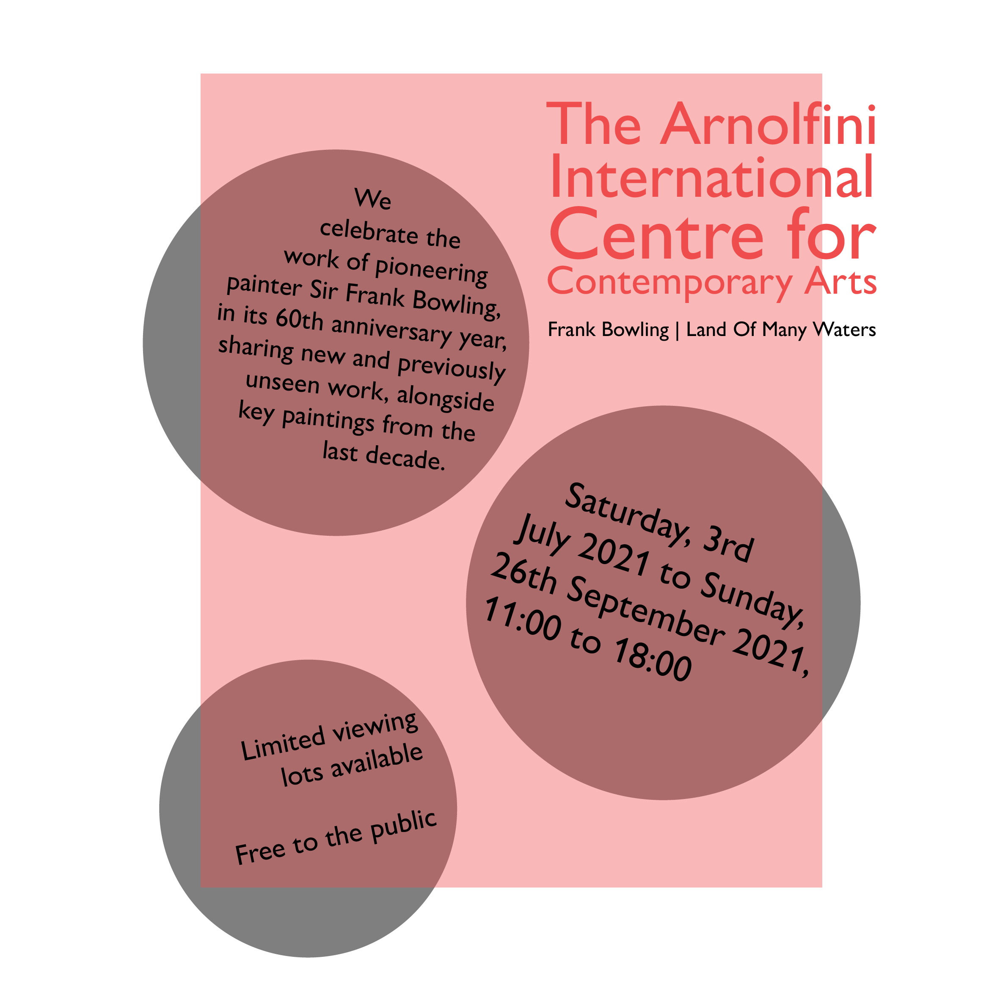
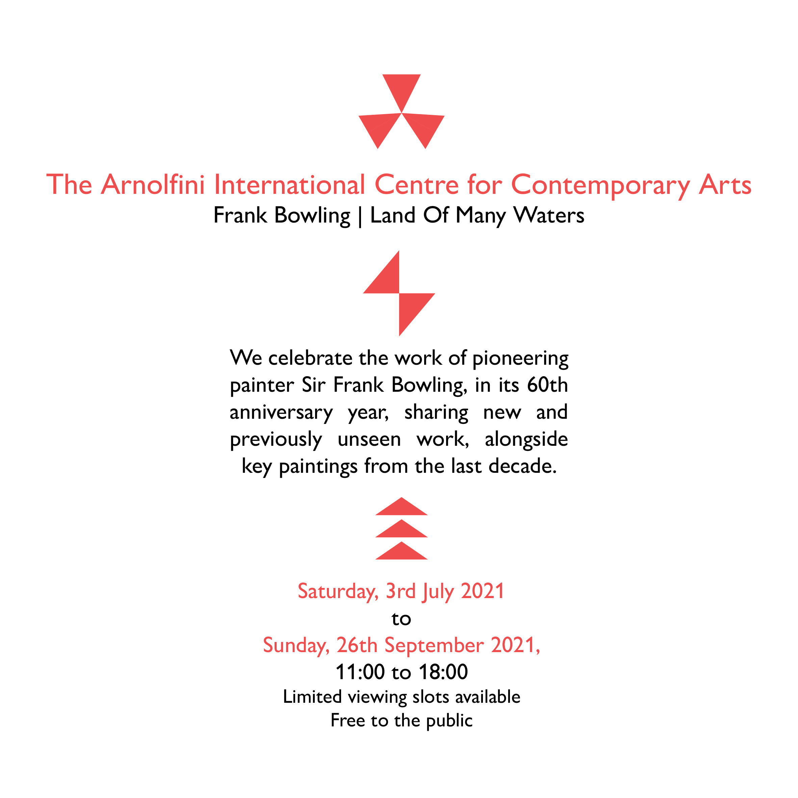

I made a thick diagonal black line and started working from there. I added plenty of white space and fitted in a rectangle to reduce the emptiness.

Radial
/ˈreɪdɪəl/
A half circle with text radiating from it with equal spacings. I made it more interesting to look at by adding curved lines around the circle.

Dilatational
/dʌɪleɪˈteɪʃ(ə)n(ə)l/
Perfectly aligned in the middle while it bent around the circles in the centre. I made sure the texts were not too slanted to one side.

Random
/ˈrandəm/
I had the text squished and rotated in many directions to fulfil the randomness of the type system. I had a few shapes to bring the randomness even further.

Grid
/ɡrɪd/
I used black boxes as a placeholder for what could be images. The texts were exactly within the height of each box fulfilling the grid layout.

Modular
/ˈmɒdjʊlə/
The texts were within the circles within the rectangle. I made sure to tilt them a little to differentiate it from the Grid type system.
Transitional
/tranˈzɪʃ(ə)n(ə)l/
I started with wavy shapes as the base of my design. I continued by adding text that followed the flow of the shapes.

Bilateral
/bʌɪˈlat(ə)r(ə)l/
The texts were justified to fit the middle section, except the title and subtitle. I added simple triangular shapes to fill in the white space.